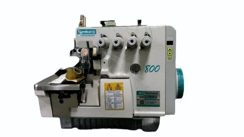

Назад
Описание:Nanbang - Швейная машинка Nanbang 800 — это надежное и функциональное устройство для домашнего и профессионального использования. Она сочетает в себе простоту в управлении и широкий функционал, подходя как для новичков, так и для опытных пользователей.
Характеристики:
- Тип: Электрическая
- Скорость шитья: До 800 стежков в минуту
- Типы строчек: 12-15, включая прямые и декоративные
- Регулировка длины стежка: От 0 до 4 мм
- Функции: Автоматическое обрезание нити, реверс, автоматическое создание петли
- Подсветка: Встроенная подсветка рабочей зоны
Цена: 380$